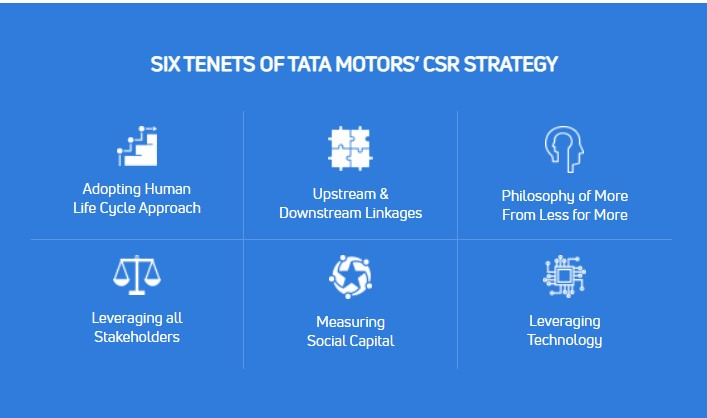

At Tata Motors, all our Corporate Social Responsibility initiatives focus on improving the quality of life of underprivileged communities, neighbouring our business operations. Keeping up with the Sustainability Development Goals (SDGs), our interventions focus on health, education, employability and environment, with a special focus on the historically and socially deprived Scheduled Caste and Scheduled Tribe communities. In the year 2020-21, our CSR interventions have touched 7.5 lakh lives in India.
Annual CSR report:2020-21
Global automobile manufacturer Tata Motors Limited acknowledges its roots and tirelessly works to address the needs and aspirations of the community, pushing others onwards to development. We have a six-pronged CSR strategy that attends to the societal needs starting from pre-natal care to education, and serves across the spectrum – helping with high-school level courses to professional ones, leading to employability and employment.
Furthering our Sustainable Development Goals (SDGs), our corporate social responsibility initiatives in FY 2019-20 touched 830300 lives, of which 41% belong to the SC and ST communities. We have been catering to domains, starting with sustainability initiatives through community engagement, to social upliftment and environmental transformation, addressing healthcare and sanitation issues, strengthening household income, making women self-reliant and more.
Addressing malnutrition, spreading awareness and delivering preventative healthcare – Impacted3,82,888lakh lives
Improving employability through skill development, vocational training, assistance for supplementing income, women empowerment – Skilled17,661 people
Offering water relief measures – Impacted 8,153 lives
ata Motors’ family volunteered – 10,232 employees clocked 29,011 hours for social upliftment
ata Motors’ family volunteered – 10,232 employees clocked 29,011 hours for social upliftment
ata Motors’ family volunteered – 10,232 employees clocked 29,011 hours for social upliftment
ata Motors’ family volunteered – 10,232 employees clocked 29,011 hours for social upliftment
Besides the ongoing programmes for societal and community betterment, our teams respond to issues on ‘need’ basis across the year as well. In 2020-21, we reached out to impact 1,36,800 lives through our Covid Response initiatives, which involved equipping the ground-zero heroes and educating masses for containment and protection, involving spends of around Rs 3.34 crores.
Details of all our initiatives can be found in our annual corporate social responsibility report for FY 2020-21.
Tata Motors Corporate Social Responsibility (CSR) Policy
Tata Motors is committed to sustainable development, where business goes hand in hand with societal wellbeing and environmental consciousness.


22.9 crores of rupees (₹) have been spent for CSR in FY2019-20
Tata Motors has mobilised over 59% of the resources through multi stakeholder partnerships.
© Copyright 2021 Tata Motors. All Rights Reserved. Legal Disclaimer Open Source License Disclosure
Aarogya - Health
Good health is cardinal to human wellbeing and enables one to achieve life goals.